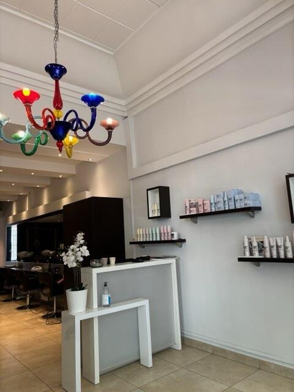
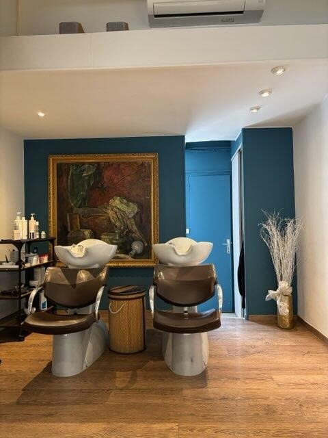
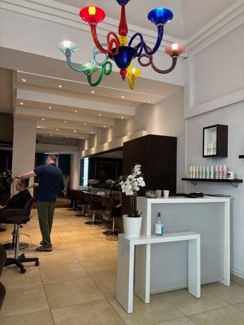
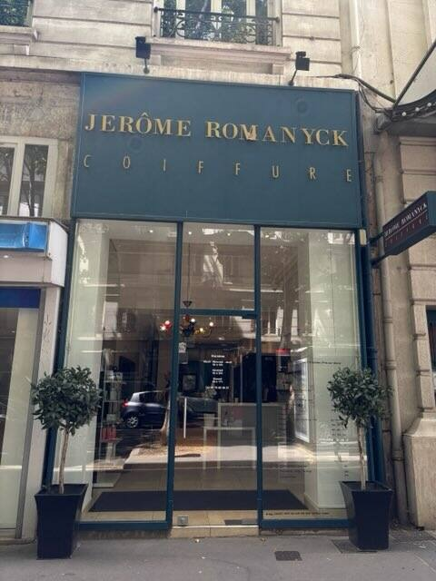

L'art de la coupe.
La science de la nuance.
Coupe femme et homme, couleur, balayage et soins : le salon vous accompagne avec une approche personnalisée, attentive à votre style et à la nature de vos cheveux.
Vous préférez échanger directement ? 04 78 60 46 21

L'Équilibre Absolu entre Ligne et Couleur
Nous envisageons la coiffure comme une discipline artistique. Chaque coupe structure le visage, chaque reflet illumine le regard.
Le Stylisme Graphique & Morpho-Coiffure
La coupe est pensée selon vos traits, votre implantation et la texture naturelle de vos cheveux, pour un résultat structuré et facile à vivre.
- Diagnostic visagisme personnalisé
- Coupes graphiques & structures modernes
- Stylisme masculin, ciseaux & tondeuse

La Colorimétrie Haute Couture
Chaque nuance est choisie selon votre base, votre teint et l'entretien souhaité, avec une attention particulière portée à la qualité du cheveu.
- Balayages & travail de lumière
- Fondus de racines et nuances naturelles
- Soins adaptés aux cheveux colorés
Le Diagnostic Signature en 3 Temps
Parce que chaque style est unique, le salon commence par comprendre vos attentes, vos habitudes et la nature de vos cheveux.
L'Étude Morphologique & Visagisme
Un échange permet d'observer la forme du visage, l'implantation, la texture naturelle et vos habitudes au quotidien.
La Création & L'Accord Chromatique
La coupe et la couleur sont travaillées ensemble afin d'équilibrer les volumes, les contrastes et la lumière.
Les Conseils d'Entretien
Vous repartez avec des conseils simples pour préserver la forme de la coupe et l'éclat de la couleur à la maison.
Notre Studio en Détail
Découvrez un salon lumineux où le mobilier contemporain, les œuvres d'art et la couleur bleu canard créent une atmosphère à la fois élégante et accueillante.

Romanyck Coiffure à Lyon 3e
Retrouvez le salon et contactez-nous directement par téléphone.
Le salon
62 Avenue Maréchal de Saxe, 69003 Lyon
Horaires
Mardi — Jeudi
Vendredi
Samedi
Lundi & dimancheFermé
Téléphone

Le service Google Maps ne se charge qu'après votre clic.